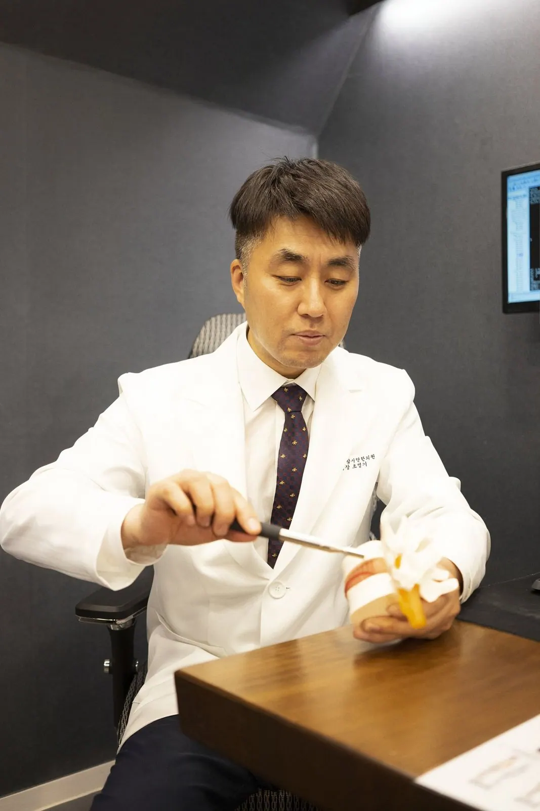

한 줄 답변
한의원 문진은 아픈 곳 하나만 묻지 않고 몸의 온기, 소화, 잠, 대소변, 통증을 함께 묻는데, 이는 증상이 생활 전체와 이어져 나타나는 경우가 많다고 보기 때문입니다.
한의원 문진은 아픈 곳 하나만 묻지 않고 몸의 온기, 소화, 잠, 대소변, 통증을 함께 묻는데, 이는 증상이 생활 전체와 이어져 나타나는 경우가 많다고 보기 때문입니다.
여쭙는 것
- 몸의 온기: 손발이 찬지, 열감이 있는지, 땀이 어떤 때 나는지
- 소화: 식욕, 식사 뒤 더부룩함, 속쓰림, 트림
- 잠: 잠들기까지 걸리는 시간, 자주 깨는지, 아침에 개운한지
생활에서 해 볼 것
- 일주일 정도 잠, 식사, 대변, 통증을 하루 한 줄씩 적어 보기
- 불편이 심한 날과 덜한 날의 차이를 찾아보기
- 답하기 어려운 질문은 "잘 모르겠다"고 말해도 된다는 점 기억하기
한의원에서 함께 살필 것
- 아픈 곳과 상관없다고 생각되는 불편이 여러 개 있을 때 함께 정리해서 우선순위를 정…
- 어떤 질문에 답하기 어려울 때는 생활 속에서 같이 확인해 나갑니다.
- 변화를 쉽게 기록하고 싶을 때 간단한 메모 방법을 함께 정합니다.
먼저 확인이 필요한 신호
- 갑작스러운 혈변이나 검은 변, 심한 복통
- 가슴 통증이나 숨 가쁨
- 한쪽 팔다리의 마비나 힘 빠짐, 말이 어눌해지는 증상
한의원 문진에서 아픈 곳과 상관없어 보이는 온기, 소화, 잠, 대소변까지 묻는 것은 증상이 생활 전체와 이어져 나타나는 경우가 많기 때문입니다. 허리가 아픈 분이 잠을 설치고 소화도 불편하다면 통증만 보는 것보다 함께 보는 편이 이해하기 쉽습니다. 좋은꿈참사랑한의원에서는 이를 몸따삶잘, 즉 몸은 따뜻한지, 소화는 편한지, 잠은 잘 자는지, 대소변은 어떤지, 통증과 함께 평소 생활은 어떤지를 함께 살핀다는 말로 정리해 여쭙니다.
왜 함께 묻나요
- 잠을 설치면 통증을 더 예민하게 느끼고, 통증 때문에 잠을 설치는 일이 서로 이어질 수 있습니다.
- 긴장이 이어지면 소화와 대변의 리듬이 함께 흔들리는 경우가 많습니다.
- 한의학에서는 몸의 온기, 땀, 소화, 대소변을 몸 상태를 가늠하는 기본 단서로 봅니다.
- 여러 불편을 한 번에 들어 두면 무엇부터 살필지 우선순위를 정하기 쉬워집니다.

먼저 이렇게 여쭙니다
- 몸의 온기: 손발이 찬지, 열감이 있는지, 땀이 어떤 때 나는지
- 소화: 식욕, 식사 뒤 더부룩함, 속쓰림, 트림
- 잠: 잠들기까지 걸리는 시간, 자주 깨는지, 아침에 개운한지
- 대소변: 횟수와 모양, 밤에 소변을 보러 깨는지
- 통증: 어떤 동작에서 아픈지, 하루 중 언제 심한지
일상에서 먼저 해 볼 수 있는 것
- 일주일 정도 잠, 식사, 대변, 통증을 하루 한 줄씩 적어 보기
- 불편이 심한 날과 덜한 날의 차이를 찾아보기
- 답하기 어려운 질문은 "잘 모르겠다"고 말해도 된다는 점 기억하기
- 다른 병원에서 들은 진단이나 검사 결과를 함께 챙기기

한의원에서 함께 살필 수 있는 경우
- 아픈 곳과 상관없다고 생각되는 불편이 여러 개 있을 때 함께 정리해서 우선순위를 정합니다.
- 어떤 질문에 답하기 어려울 때는 생활 속에서 같이 확인해 나갑니다.
- 변화를 쉽게 기록하고 싶을 때 간단한 메모 방법을 함께 정합니다.
좋은꿈참사랑한의원에서는 이렇게 들은 이야기를 바탕으로 필요하다고 판단될 때 진맥·설진·복진으로 살피고, 상태에 맞춰 침·추나·한약 상담 등을 정합니다. 다음 진료에서는 같은 영역을 다시 짧게 여쭤 달라진 점을 확인합니다.
이렇게 기록해 오시면 상담이 쉬워집니다
- 일주일 동안의 잠든 시각과 깬 횟수
- 식사 시간과 소화가 불편했던 때
- 대변 횟수와 모양, 밤에 소변으로 깬 횟수
- 통증이 심했던 동작과 시간

이런 증상은 먼저 확인이 필요합니다
- 갑작스러운 혈변이나 검은 변, 심한 복통
- 가슴 통증이나 숨 가쁨
- 한쪽 팔다리의 마비나 힘 빠짐, 말이 어눌해지는 증상
이런 증상은 문진을 기다리지 말고 119나 응급실을 이용하세요. 민감하게 느껴지는 질문에는 답하지 않으셔도 되며, 복용 중인 약은 처방한 의사와 상의 없이 줄이거나 끊지 않습니다.
자주 묻는 질문
허리가 아픈데 왜 소화와 잠을 묻나요?
증상은 서로 영향을 줄 수 있어서 생활 전체를 함께 보기 위해서입니다.
답하기 곤란한 질문에는 어떻게 하나요?
말씀하고 싶지 않은 부분은 건너뛰셔도 됩니다.
문진은 오래 걸리나요?
증상과 상태에 따라 다르며, 처음 방문 때 조금 더 걸릴 수 있습니다.
이 글은 일반적인 건강 정보이며 개인의 진단이나 치료를 대신하지 않습니다. 증상이 있거나 복용 중인 약이 있다면 진료를 통해 확인하세요. 치료 효과는 개인마다 다를 수 있습니다.
지난 이야기부터 이어서 묻습니다
좋은꿈참사랑한의원은 재진 때 지난번 이야기부터 이어서 여쭙니다. 진료시간과 예약은 오시는 길에서 확인하세요.
좋은꿈참사랑한의원은 재진 때 지난번 이야기부터 이어서 여쭙니다. 진료시간과 예약은 오시는 길에서 확인하세요.